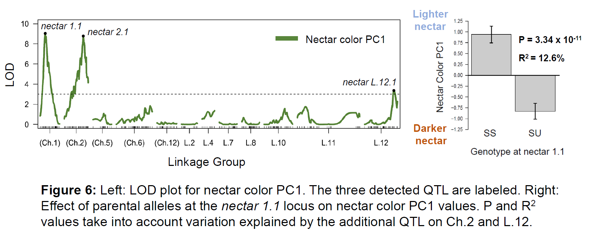

Research
Local adaptation
 Adaptation to local environmental conditions is considered a major factor driving evolutionary divergence, but the key environmental variables responsible and the genetic basis of these adaptations remains poorly understood. I am interested in how selective gradients (vs. geographic distance) imposed by the abiotic environment can maintain genetic variation across landscapes and whether or not these patterns are evident at the level of single loci. I am currently investigating this in several wild tomato species (Solanum sect. lycopersicum) which are located throughout the Andean region of South America and on the Galapagos Islands. Acute clinal variation in precipitation, temperature, and salinity in these regions likely imposes selection on traits affecting drought and/or salt tolerance. One powerful approach to dissecting the genetics of local adaptation is to characterize associations between genes and environmental variables, and then test for genotype-by-environment fitness effects of these genes through experimental manipulations. Using ddRAD, I am currently genotyping 260 accessions of Solanum pimpinellifollium and characterizing associations between SNPs and WorldClim environmental variables. Next, I plan to subject these same accessions to experimental drought, temp, and/or salt stress in the greenhouse to test for GxE effects of associated variants on fitness.
Adaptation to local environmental conditions is considered a major factor driving evolutionary divergence, but the key environmental variables responsible and the genetic basis of these adaptations remains poorly understood. I am interested in how selective gradients (vs. geographic distance) imposed by the abiotic environment can maintain genetic variation across landscapes and whether or not these patterns are evident at the level of single loci. I am currently investigating this in several wild tomato species (Solanum sect. lycopersicum) which are located throughout the Andean region of South America and on the Galapagos Islands. Acute clinal variation in precipitation, temperature, and salinity in these regions likely imposes selection on traits affecting drought and/or salt tolerance. One powerful approach to dissecting the genetics of local adaptation is to characterize associations between genes and environmental variables, and then test for genotype-by-environment fitness effects of these genes through experimental manipulations. Using ddRAD, I am currently genotyping 260 accessions of Solanum pimpinellifollium and characterizing associations between SNPs and WorldClim environmental variables. Next, I plan to subject these same accessions to experimental drought, temp, and/or salt stress in the greenhouse to test for GxE effects of associated variants on fitness.
Galápagos conservation genetics
Despite their young age (3 my), the Galápagos Islands have extremely high species diversity. This diversity has been maintained largely as a result of the islands remaining uninhabited until the early 1800s. Today many species on the Galápagos Islands face three major conservation threats: habitat loss due to human development and climate change, antagonistic effects of non-endemic herbivores, and hybridization with invasive relatives. This project aims to assess the demographic, ecological, and hybridization status of two Solanum (wild tomato) species—Solanum cheesmaniae and Solanum galapagense—that are endemic to the Galápagos Islands, by collecting data on abiotic habitats and herbivore interactions, and conducting a population genetic analysis of hybridization. Historical collection records indicate the location of many populations, though to date there has been no systematic effort to quantify how ecological factors such as climate, habitat, and herbivory or evolutionary forces such as hybridization and introgression may modulate species distributions. Our assessment will provide insight into the biological basis of several conservation threats, leading not only to more focused conservation efforts in these and other species on the Galápagos, but also to data useful for uncovering the mechanistic basis of important evolutionary phenomena, including local adaptation.
Jaltomata floral evolution
This project, done in collaboration with Dr. Jamie Kostyun, is investigating the genetic architecture of several interesting floral morphology and nectar color traits in the sister genus to Solanum, Jaltomata. My contribution has consisted of linkage map construction and QTL scanning. A long-standing question is whether or not pleiotropy can accelerate evolutionary change. This genus has undergone rapid and extreme floral diversification yet we have found little evidence of QTL colocalization between traits suggesting a small to negligible role for pleiotropy. LOD score plot for corolla depth is pictured above.